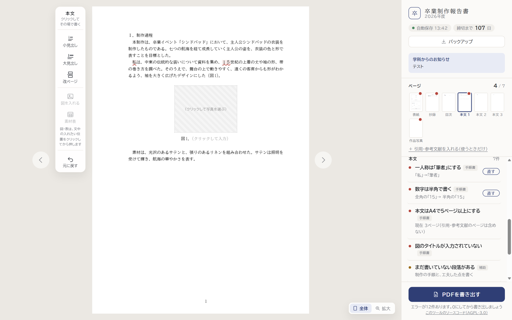
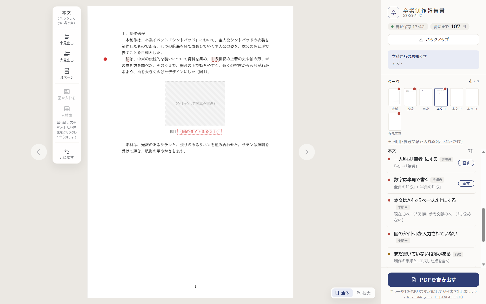
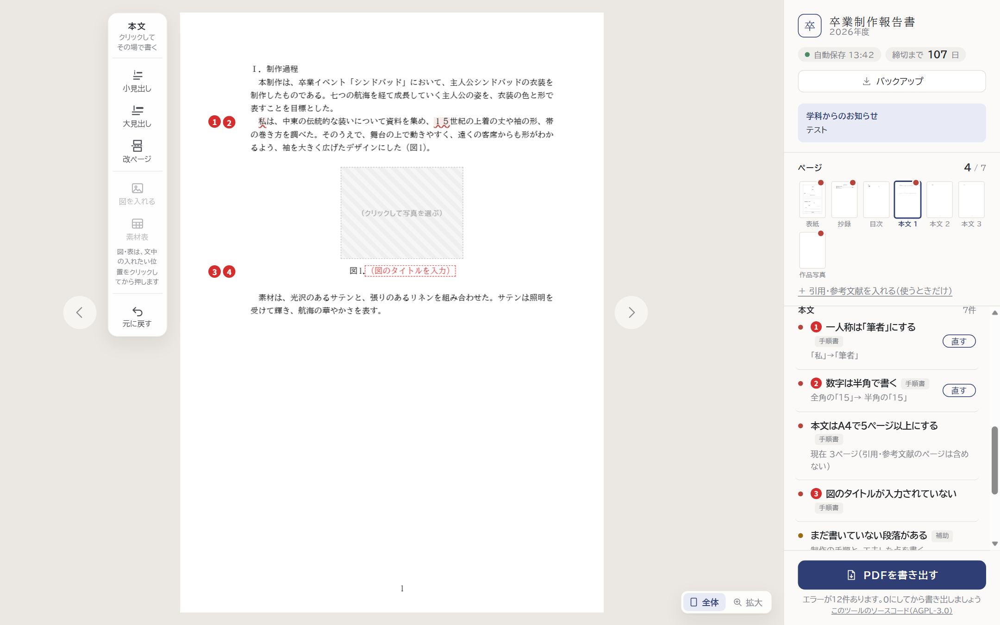

エラー・注意の箇所を、紙面の上で気づきやすくする
例：「私は」（一人称）、「１５世紀」（全角の数字）、タイトルを入れていない図。
案1〜3 共通：タイトルなどの空欄は、赤い点線の枠と赤い字（「図のタイトルを入力」）で示す（今は灰色の「クリックして入力」）。
今細い波線と、うすい色。空いているタイトルは灰色の字
案1 文字そのものを濃く示す太い下線と、はっきりした赤の背景・赤い字。直すところが文中で目立つ
案2 行の左の余白に赤い印今の波線に加えて、エラーのある行の左に●。ページ全体を見たときに、どこにあるかがすぐわかる
案3 余白に番号札＋右の一覧にも同じ番号エラーのある行の左に番号。右のセルフチェックの一覧にも同じ番号を付け、どの指摘がどこかを対応させる